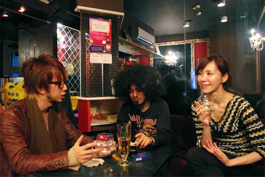

バックドロップシンデレラ（3/4） 
――確かに。僕も最初はジャクソンから入りましたけど聞けば聞くほどハマってく。決めの変拍子とか。 あとやっぱオッサンがね、オッサンが今回新境地！みたいな。あの歌詞は実体験ですか？
豊島渉： 普通に高速道路走ってると50歳や60歳くらいのオッサン達がが随分と体積のデカい単車で走ってガンガン追い抜いてくんですよ。 で、そいつらがまたサービスエリアにいたりして。ソフトクリーム食ってんなみたいな（笑） 個人的にはBLANKEY JET CITYに「PUNKY BAD HIP」って曲があって、 15人の単車乗りのカッコイイ映画チックなストーリーある曲。 ブランキーならではの世界観があって。世界が終わるまでベイベーみたいな。
――WANDSみたいな（笑）
豊島渉： それが昔から大好きなんですけども、現実日本にこんなカッコイイバイク乗り集団いないだろうと（笑） その時に高速道路から見たオッサンバイカー集団を見て「まぁ実際こんな感じになるよね現実問題（苦笑）」と。
――日がな月金で働いてて小太りのちょいダサくらいのイメージで聞いたほうが良い？
アサヒキャナコ： そっちの方がイメージです（笑）そっちの方が愛らしい。
豊島渉： それもそれでいとおかしみたいな。
アサヒキャナコ： かっこよすぎると何も言えなくなっちゃうので（笑）
豊島渉： 本来はかカッコ良くあるべきなんだ（憧れる）けれども「こんなやついねーよ」って。でも楽しそうで。過去に生きてないやつもいたりそれぞれ。
――今回はツアー中そんな集団見ませんでしたけどね。
豊島渉： あなたが寝てるだけです（爆笑）
――（苦笑）なんか面白い景色とかありました？
豊島渉： ・・・山形で虹が（笑）
――え？え？
豊島渉： あーりーしゃん寝てたけど（笑） 仙台のオールが終わって朝方霧の山形に入ったところで凄い虹があったんですよ。 綺麗なアーチで山形に温かく出迎えられて・・・そのあと対バンはハードコアバンドだったと（笑）
――でも実際そんなタイバン見てないでしょ。
豊島渉＆アサヒキャナコ： 見てるよ！（苦笑）
豊島渉： 見れないときでも手分けして見ます。本番見てなくても絶対リハは見てます。 なんだかんだ良かったバンドに対しては誰かから報告があったりとか何かしら絶対そのバンドがどんな音楽やってるかは見てます。
――なるほど失礼しました（苦笑） さていよいよ2013年が明けましたが今年は？目標。
豊島渉： 去年より良いアルバムをつくる。
――けっこーリリースペース早くないですか？
豊島渉： でも一年に一枚くらい。
――だって曲めっちゃ多いですよ。1枚に13、14曲とか入ってて。
豊島渉： アルバムが作りたいんですよ。2012年ミニアルバムを二枚出そうって話も微妙に持ち上がったんですけども 私はミニアルバム買うという習慣がないので、メンバーの聞いてもみんなミニアルバムを買わないのでやめたんです。 自分が買わないものは売れないだろうと思いアルバムを作ろうと思いました。
――でもよくそんなポンポン曲書けますよね。